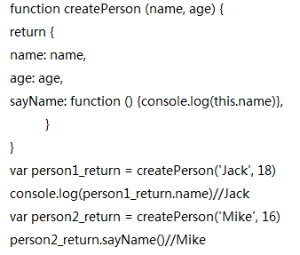
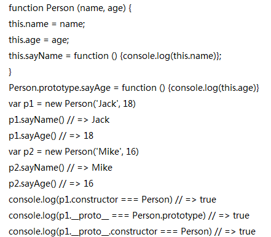
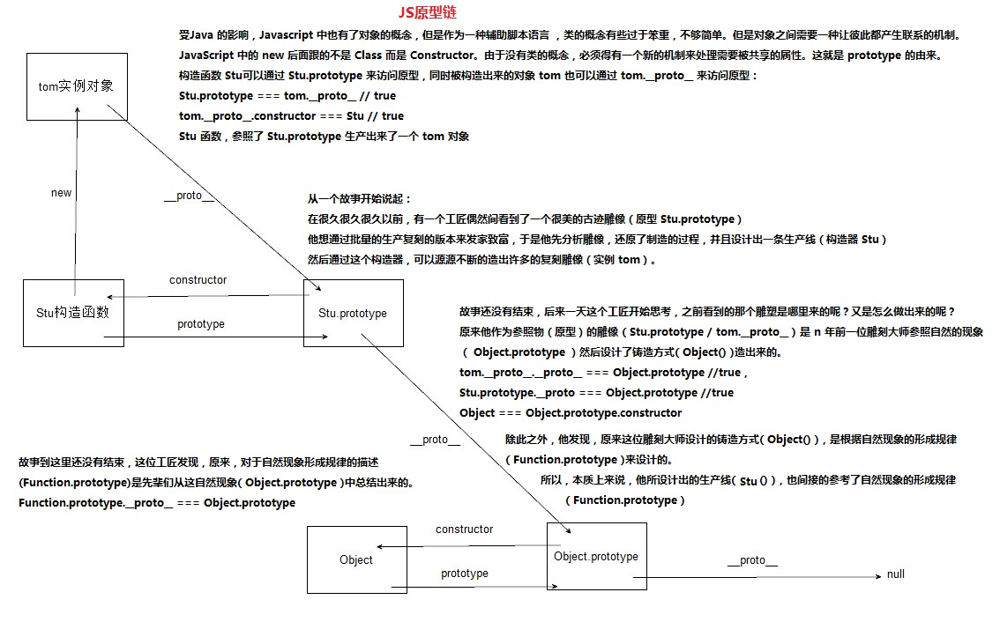

javascript作为脚本语言，没有类的概念，为提高代码复用效率需要解决继承问题
把对象封装作为函数的返回值,就可以用此函数获取对象的属性值，给定不同的参数就生成不同对象，但没有解决封装的对象特征识别问题
new操作符的原理：当使用 new 操作符调用 Person() 的时候，实际上这里会先创建一个对象var instance = {}， 然后让内部的 this 指向 instance对象，this = instance接下来所有针对 this 的操作实际上操作的就是 instance， 在函数的结尾处会将this返回，return this，也就是返回instance。
该方案可以识别对象的具体类型,每一个实例对象中有一个constructor属性，该属性指向创建该实例的构造函数，但该方案存在一个浪费内存的问题，每一次生成一个实例，都必须生成syaName方法而不管这个实例对象是否需要此方法，如果实例对象很多，会造成极大的内存浪费。
构造函数在创建的过程中，系统自动创建出与构造函数相关的空对象，通过构造函数的prototype属性来访问，并把对象地址存放在生成的每一个实例对象的__proto__上
每一个实例对象都具有一个constructor属性，指向创建该实例的构造函数，来标识对象类型，现在推荐使用instanceof操作符。每一个实例对象都具有一个__proto__ 属性，指向创建该实例的构造函数的原型对象，即构造函数的prototype属性，所有对象的共用属性放在此构造函数的prototype属性上，这个共用属性就是原型。
console.log(p1.sayName === p2.sayName)// => flase
console.log(p1.sayAge === p2.sayAge) // => true
定义在构造函数prototype属性上方法,new出来的每一个实例对象此方法的地址一样，未定义在prototype上的就不一样
